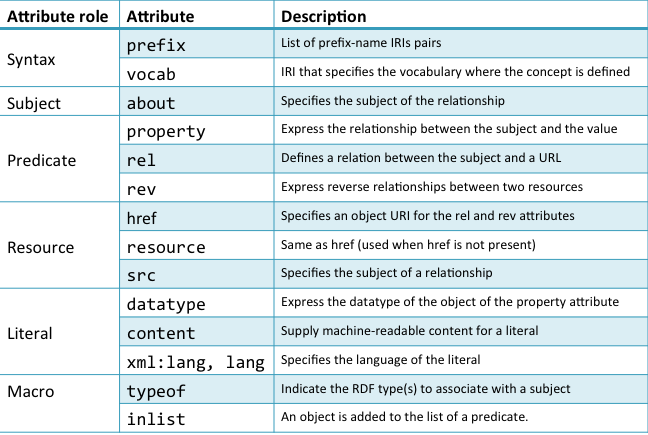
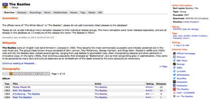
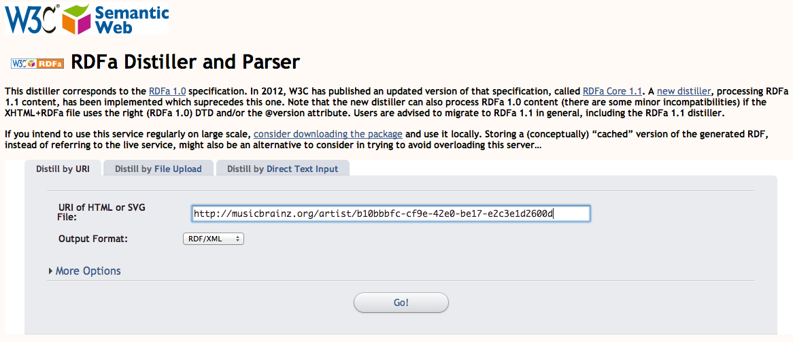
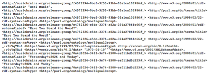

A dataset can be accessed via four different mechanisms:
These will be described below.
As we saw earlier, the first two linked data principles state that URIs should be used as names for things and that HTTP URIs should be used so that users can look up those names. Dereferencing is the process of looking up the definition of a HTTP URI.
The URI http://dbpedia.org/resource/The_Beatles is used to name The Beatles. It is not possible to send The Beatles over HTTP. However if you access this URI you will be forwarded to a document at some other location that can provide you with information about The Beatles. The HTTP conversation goes as follows:
If you request data about The Beatles in HTTP format you will be redirected to a web page (http://dbpedia.org/page/The_Beatles). If you request the data in RDF/XML format then you will be redirected to an alternative document (http://dbpedia.org/data/The_Beatles.rdf). If you are providing rather than requesting the data then you need to decide which RDF triples should be returned from your dataset in response to dereferencing a HTTP URI about an entity (such as The Beatles) which cannot itself be returned. Guidance on what to return can be found in [16]. This can be summarised as follows:
RDFa stands for “RDF in attributes”. RDFa is an extension to HTML5 for embedding RDF within HTML documents. The advantage of RDFa is that a single document can be used for both human and machine consumption of the data. A human accessing the data via a web browser need not be aware that an alternative RDF representation is embedded within the page. RDFa can be thought of a bridge between the Web of Data and the Web of (human readable) Documents.
Figure 11 lists the main attributes of RDFa. The about attribute specifies the subject that the metadata is about. The typeof attribute specifies the rdf:type of the subject. The property attribute specifies the type of relationship between the subject and another resource. The vocab and prefix attributes specify the default vocabulary and prefix mappings.

Figure 11: RDFa attributes.
Below we can see a portion of HTML+RDFa contained in a HTML <div> element. The subject of this fragment of RDFa is specified using the about attribute. Here the subject is the MusicBrainz URI for The Beatles. In the line below we see the typeof property which is used to specify the rdf:type of the subject. The type of The Beatles is specified as the MusicGroup concept from the Music Ontology.
<div class="artistheader"
about="http://musicbrainz.org/artist/b10bbbfc-cf9e-42e0-be17-e2c3e1d2600d#_"
typeof="http://purl.org./ontology/mo/MusicGroup">
…
</div>
Below we can be see this RDF triple extracted from the HTML+RDFa.
<http://musicbrainz.org/artist/b10bbbfc-cf9e-42e0-be17-e2c3e1d2600d#_>
<http://www.w3.org/1999/02/22-rdf-syntax-ns#type>
<http://purl.org./ontology/mo/MusicGroup>.
Figure 12 shows an example of a page in HTML+RDFa format. This is the MusicBrainz page about The Beatles (http://musicbrainz.org/artist/b10bbbfc-cf9e-42e0-be17-e2c3e1d2600d). As mentioned earlier, the human reader need not be aware of the RDF embedded within the page.

Figure 12: MusicBrainz page in HTML+RDFa format.
An RDFa distiller and parser can be used to extract the RDF representation. In Figure 3.13 the URL for the MusicBrainz page about The Beatles has been entered into the form (http://www.w3.org/2007/08/pyRdfa).

Figure 13: Extracting RDF from a MusicBrainz page in HTML+RDFa format.
Figure 14 shows a fragment of the RDF contained in the page, represented in the N-Triples format.

Figure 14: Extracted RDF in N-Triples format.
An RDF Dump is a file that contains the whole or some subset of an RDF dataset. A dataset may be split over several data dumps. An RDF dump may use one of a number of formats. RDF/XML encodes RFD in XML syntax. N-Triples is a subset of the Turtle format in which the RDF is represented as a list of dot-separated triples. The format N-Quads is an extension of N-Triples in which a fourth element specifies the context or named graph of each triple. A site that maintains a list of available RDF data dumps can be found in [17].
SPARQL is a language that can be used to query an RDF dataset. A SPARQL endpoint is service can that processes SPARQL queries and return results. SPARQL queries can be used to retrieve particular subsets of the dataset. See chapter 2 for more information on SPARQL. Lists of publicly available SPRAQL endpoints are maintained at [18] and [19].